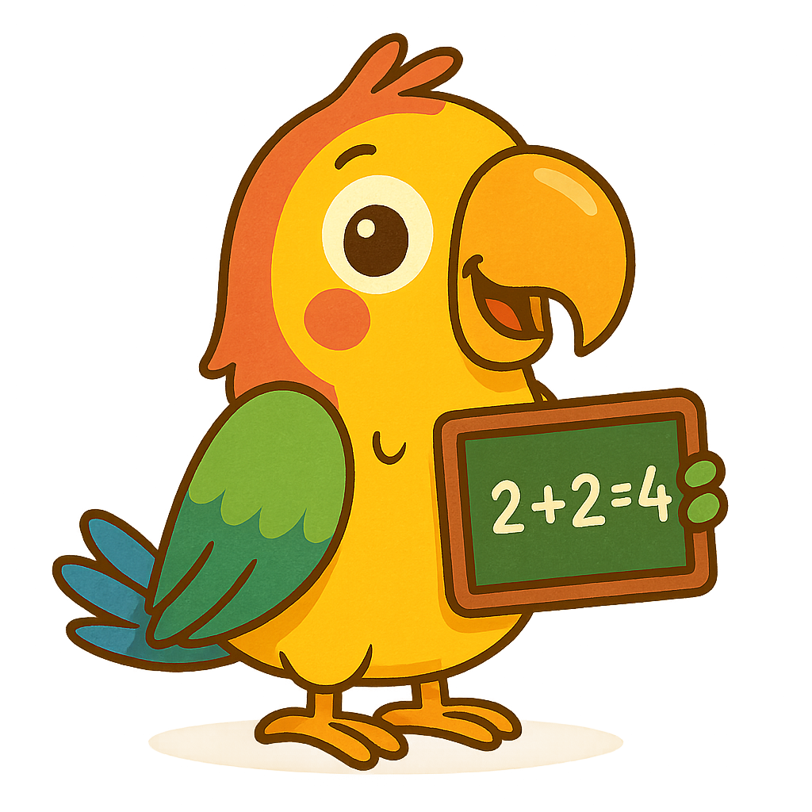

Switch between light and dark mode to see how the hero section adapts.
Pop the bubbles with the correct answers! Practice addition, subtraction, and multiplication while having fun with colorful bubbles.
